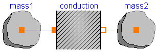

Thermal.Examples.TwoMasses
This tests the thermal response of two masses connected by a conducting element. This example also helps verify that the Modelica sign conventions have been obeyed. The expected solution would be for the mass with the higher temperature to cool off while the mass with a warmer temperature heats up. They should each asymptotically approach the temperature that results from dividing the total initial energy in the system by the sum of the mass of each element times that elements specific heat. In other words: Tf = (T1(t=0)*m1*cp1+T2(t=0)*m2*cp2)/(m1*cp1+m2*cp2)
model TwoMasses "Simple conduction test"
discrete Modelica.SIunits.Temperature Tf
"Projected final temperature";
Basic1D.Capacitance mass1(n(T(start=400, fixed=true)));
Basic1D.Capacitance mass2;
Basic1D.Conduction conduction;
equation
connect(mass1.n, conduction.a);
connect(conduction.b, mass2.n);
algorithm
when (initial()) then
Tf := (mass1.n.T*mass1.V*mass1.rho*mass1.cp + mass2.n.T*mass2.V*mass2.rho*
mass2.cp)/(mass1.V*mass1.rho*mass1.cp + mass2.V*mass2.rho*mass2.cp);
end when;
end TwoMasses;
Thermal.Examples.ThermalSpring

This example tests the "ThermalSpring" model. The thermal spring model is a means by which thermal energy can be translated into mechanical energy through thermal expansion. This example tests the effect of allow or disallowing such expansion. In the case where the expansion is allowed, it does work on an inertia. When the expansion is not allowed, the energy is stored as potential energy within the spring.
model ThermalSpring "Thermal Spring Test" MixedDomain.RotationalSpring spring1(unstretched_nom=1); MixedDomain.RotationalSpring spring2(unstretched_nom=1); Basic1D.Capacitance mass1(n(T(start=300, fixed=true))); Basic1D.Conduction Conduction1; Basic1D.Capacitance mass2(n(T(start=400, fixed=true))); Modelica.Mechanics.Rotational.Fixed mount2(phi0=1); Modelica.Mechanics.Rotational.Fixed mount3; Modelica.Mechanics.Rotational.Fixed mount1; Modelica.Mechanics.Rotational.Inertia inertia; Basic1D.Capacitance mass3(n(T(start=300, fixed=true))); Basic1D.Conduction Conduction2; Basic1D.Capacitance mass4(n(T(start=400, fixed=true))); equation connect(mass2.n, Conduction1.b); connect(Conduction1.a, mass1.n); connect(mount2.flange_b, spring2.flange_b); connect(spring2.flange_a, mount3.flange_b); connect(inertia.flange_b, spring1.flange_b); connect(spring1.flange_a, mount1.flange_b); connect(mass4.n, Conduction2.b); connect(Conduction2.a, mass3.n); connect(spring1.node_a, mass1.n); connect(spring2.node_a, mass3.n); end ThermalSpring;
Thermal.Examples.AllModes

This model tests the basic modes of heat transfer (conduction, convection and radiation) along with fixed and variable temperature bounday conditions.
model AllModes "Test all basic modes of heat transfer"
Basic1D.BlackBodyRadiation radiation(F=.5, A=.1);
Basic1D.Capacitance body2(V=2);
Basic1D.Capacitance body1(V=2);
Basic1D.Convection convection(h=30, A=1);
Basic1D.Conduction conduction(k=10);
BoundaryConditions.FixedTemperature LeftBC(T=600);
BoundaryConditions.VariableTemperature TempBC;
Modelica.Blocks.Sources.Trapezoid RightTemp(
amplitude={800},
rising={.25},
width={1},
falling={.25},
period={2.5},
offset={500},
startTime={1});
equation
connect(conduction.b, body2.n);
connect(conduction.a, body1.n);
connect(body2.n, radiation.a);
connect(convection.a, body1.n);
connect(LeftBC.n, convection.b);
connect(radiation.b, TempBC.n);
connect(RightTemp.outPort, TempBC.T);
end AllModes;